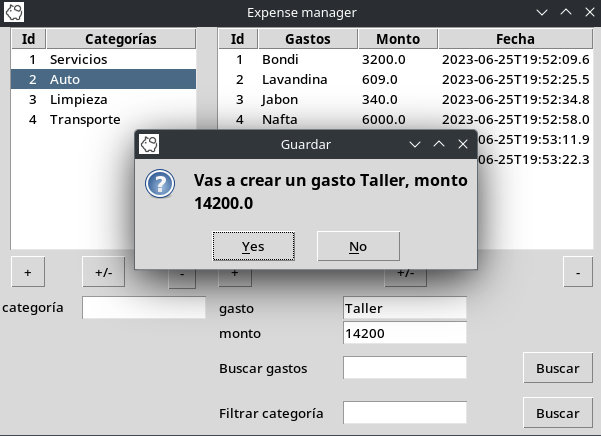
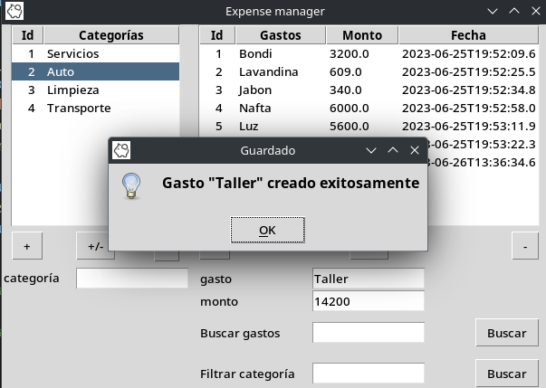
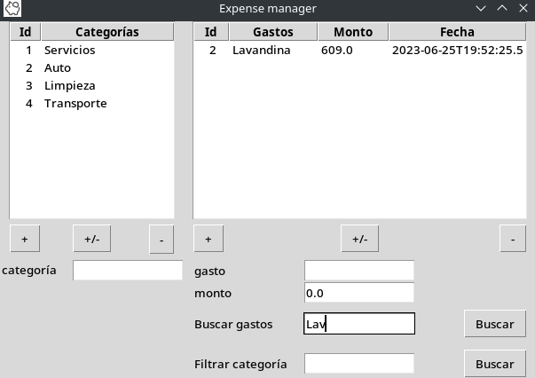

Administrador de gastos
La aplicación es un ABM de gastos y categorías, los gastos pertenecen a una categoría en concreto.
Se puede crear, editar y eliminar categorías y gastos, también se pueden buscar gastos por su nombre o parte de él o por la categoría a la que pertenecen.
Referencia rápida
Categorías
[+] Da de alta una categoría. Previo haber ingresado el nombre en el campo categoría.
[-] Elimina la categoría seleccionada, si la categoría a eliminar contiene gastos asociados, estos también serán eliminados, previo mensaje de confirmación.
[+/-] Cambia el nombre de la categoría por el valor ingresado en el campo categoría.
Gastos
[+] Da de alta un gasto. Previo haber ingresado el nombre en el campo gasto y un monto. Además debes tener una categoría seleccionada adonde quieras ingresar el gasto.
[-] Elimina el gasto seleccionado.
[+/-] Cambia el nombre y monto del gasto seleccionado por los valores ingresados, en los campos gasto y monto respectivamente.
Ejemplo
A continuación un ejemplo para crear un gasto nuevo y mas abajo como filtrar o buscar en la lista:
Crear un nuevo gasto Para crear el gasto debes completar el campo gasto y monto y tener una categoría seleccionada, en el ejemplo de la imágen se agrega el gasto Taller de 14200 a la categoría Auto seleccionada.
 {kind=link}
{kind=link}
Buscar gastos Puedes buscar gastos por su nombre, el filtro se realiza por coincidencia de inicio de palabra. Para volver a ver toda la lista presiona en Buscar con el campo “Buscar gastos” vacío.
{kind=link}
Buscar por categoría Puedes buscar gastos por su categoría, el filtro se realiza por coincidencia de inicio de palabra. Para volver a ver toda la lista presiona en Buscar con el campo “Buscar categoría” vacío.